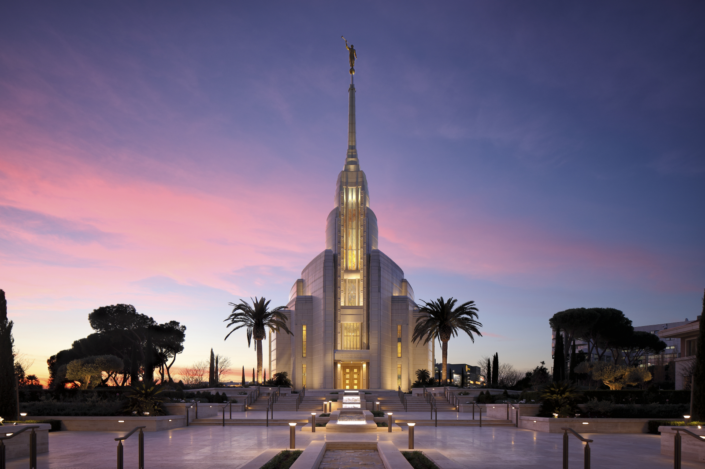
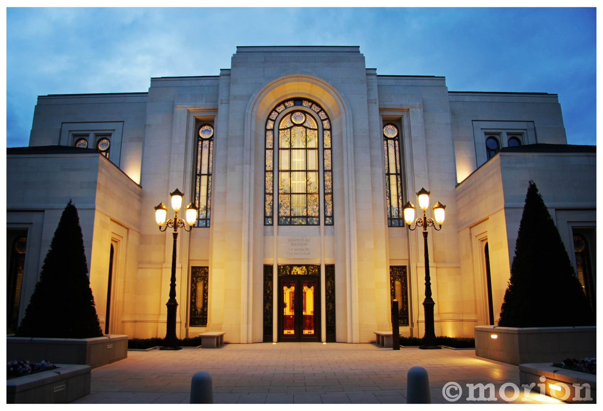
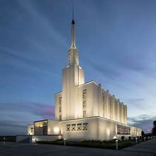

Temple Album
☰
Home
Old
New
Large
Small
Temple Picture Album
Salt Lake Temple

Rome Italy Temple

Paris France Temple
Tokyo Japan Temple
Laie Hawaii Temple
Provo City Center Temple
Logan Utah Temple

London England Temple
Bern Switzerland Temple